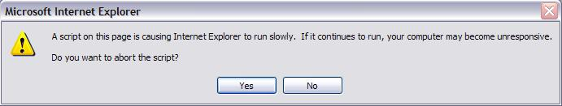

Initial Setup
Computed TMnm/TEnm -modes
This is set of two numbers associated with indexing of modes in a rectangular waveguide. As we know the rectangular waveguide modes are characterized in terms of TEnm (Hnm) and TMnm (Enm). As the computational approach used here assumes X-axis symmetry and optional Y-axis symmetry of waveguide structure, we haven= 2*kx+1 and m= (1+isym)*ky ,
where kx and ky can be any natural numbers but isym can be only 0 (no y-symmetry) or 1 (y-symmetry). In terms of such representation of mode indexing we enter the maximum numbers for kx and ky for TE and TM modes taken into account in junctions but less than 10.
Y Symmetry
All waveguide structures are assumed to be x-axis symmetrical (YZ-plane symmetry). However the y-axis symmetry (XZ-plane symmetry) is optional. Default setup for Y-symmetry is no symmetry. This option allows taking advantage of using only even m-indexed modes in computation for vertically symmetric structures and gain accuracy for the same number of waveguide modes taken into account.Active Mode Index
Default value for this index is 1, which corresponds to the TE10-mode as the only mode propagating in all nodes. However this version of WR_Connect allows a user to enter some other natural numbers specifying a class of spurious and to evaluate spurious responses. In case of spurious responses the active mode index is the first index (n) of the dominant spurious mode, i.e. 0 for TE01, 2 for TE20, 3 for TE30, etc. However it should be noted that synthesis and optimization methods are not applicable in case of the active mode index set to value not equal to 1 and simulation results give rather just characteristic picture of spurious than accurate computation results.Units
This property sets unit of dimensions to inches or millimetres by preference of user. The default setup is millimetres.Dielectric Const., [ e ]
This property sets dielectric constant of material inside the waveguide structure. The default value is 1 (vacuum).Loss tangent, [ tan d ]
This property sets loss tangent corresponding to material inside the waveguide structure. The default value is 0 (vacuum).Surface Conductivity, [ sx107S/m ]
Here we enter the value of surface of structure normalized to 107 S/m (siemens per metre). For example the conductivity of silver is 6.14 x 107 S/m, so here we enter only value of 6.14 for the surface conductivity. Please note that we still have to use values for conductivity normalized to 107 S/m if even we selected inches for the structure dimensions. As we cannot enter infinity for the ideal conductivity of surface, we reserved the number 0 or empty for this case. If the value not entered, the surface of device is assumed to be ideal conductor.
First Frequency Point, [ fmin ]
Last Frequency Point, [ fmax ]
Number of Points in Range [ Np ]
This is about frequency sweep parameters. The computational engine runs over the specified frequency range point by points (Np+1 points or Np divisions). Normally it is reasonable to select the simulation bandwidth [f0,f1] covering all pass-band and stop-band zones and the number of points [Np] adequate to see in-band ripples and out-of-band spurious spikes. There are no default values for these parameters, so they have to be entered anyway.
Example Button
Clicking this button fills all parameters as an example of valid entry. Use refresh button of IE in order to restore initial values if the "Example" button is clicked by mistake.Apply Button
Clicking this button validates the initial setup information, saves it in the project bufer and redirects to the design editor.Schematic Editor
Structure Parameters
The text entry window in center is a text editor. It is used for entering and editing schematic file of waveguide structure. The schematic file is a list of dimensions All dimensions and characteristic features associating with the 3D appearance of the structure are there. Refer to manual for details.Available Templates
Here we can select a template for some type of waveguide components. Template is a sequence of nodes and junctions characteristic for the waveguide component selected.Frequency Scale
This option is proportionally reducing or increasing all dimensions of the waveguide component listed in the text editor. It is the simplest way to apply the same design to a different frequency plan.Make Adjustment
This option is similar to frequency scaling but it applies to particular elements of the structure. It is a useful method, for example, for slightly adjustment of bandwidth of a filter by proportionally changing width of irises and length of cavities without changing other dimensions of the waveguide component.Y-Split/Mirror
Clicking this button inverts Y-symmetry of the waveguide structure. If the structure is symmetric, the structure is cut on the reference plane (y=0) with only the positive part (part above the reference plane) left. If the structure is asymmetric then its negative part is replaced with the symmetry of its positive part.Z-flip
This option reverses the sequence of elements, so the input becomes the output and vice versa.Extract Irises
This option analyzes the sequence of elements in the waveguide structure, determines smaller waveguides and defines them as irises. This method can make the structure suitable for some synthesis methods.Extract Cavities
This option analyzes the sequence of elements in the waveguide structure, determines bigger waveguides and defines them as cavities. As mentioned in the manual, representing structure as a sequence of cavities increases accuracy of computation.mm/inch
This option changes the unit of measurement from millimetre to inch or vice versa.Show Schematics
This option checks syntax of data entry and shows a schematic sequence of icons corresponding to the structure entered in the text window. It is recommended to see the schematic of structure before starting computational methods (synthesis, simulation, optimization, etc.).Delay for IE events
This option sets the computational engine to sleep for particular amount of time in order to give IE chance to respond for some other events while the solver is running. If the option is turned off, the browser does not respond for any other command until the script runs to the end. Then if the simulation requires more time, it is likely IE sends a pop-up (see Figure 1 below). It is recommended to use the default setup for this property.IE pop-ups
While running the solver (VBScript functions) usually takes full control over the web browser, stops all events and blocks all controls until it runs to the end. That means IE will not respond to controls and can send pop-ups (see Figure 1 below) if it finds the computation requires too much IE memory or execution time.
Figure 1: IE pop-up with warning This web-based version of WR_Connect prevents the pop-ups by setting a sleeping time for script during simulation ( "Analyze" button ) and optimization ( "Optimize" ) when other IE events can be executed. However you may receive the IE pop-up if you are running synthesis ( "Synthesize" button) or simulation with "Delay for IE events" turned off. Anyway if the message is received, you may go on by answering "No".